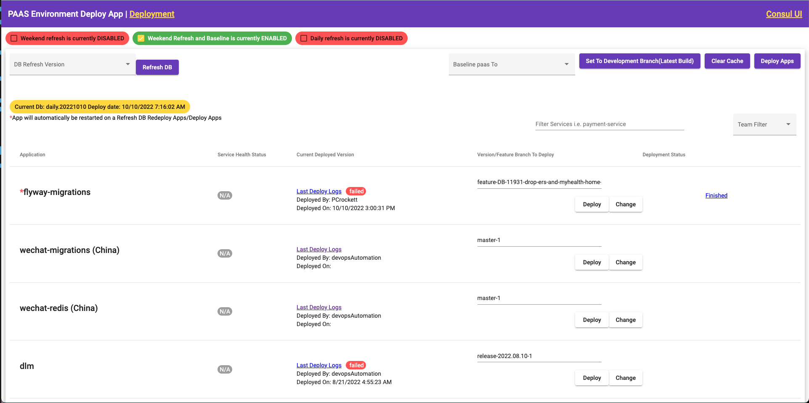
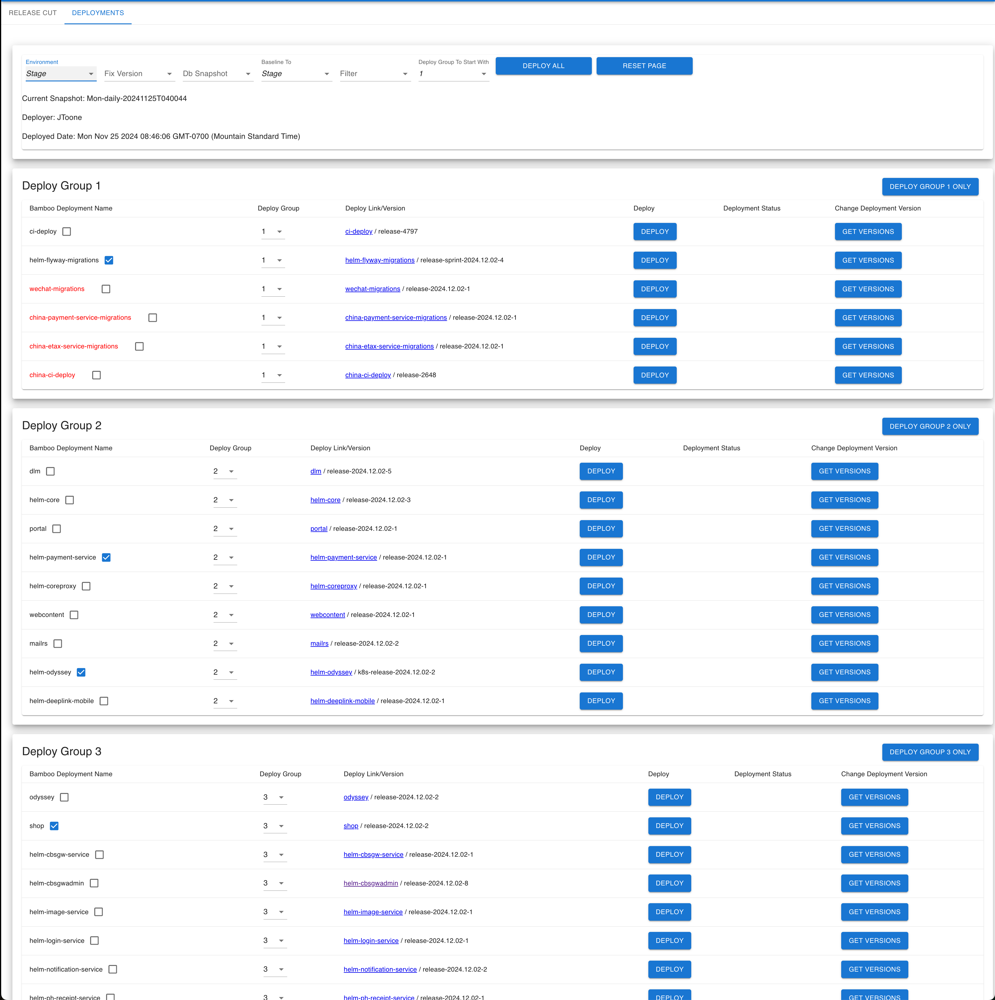
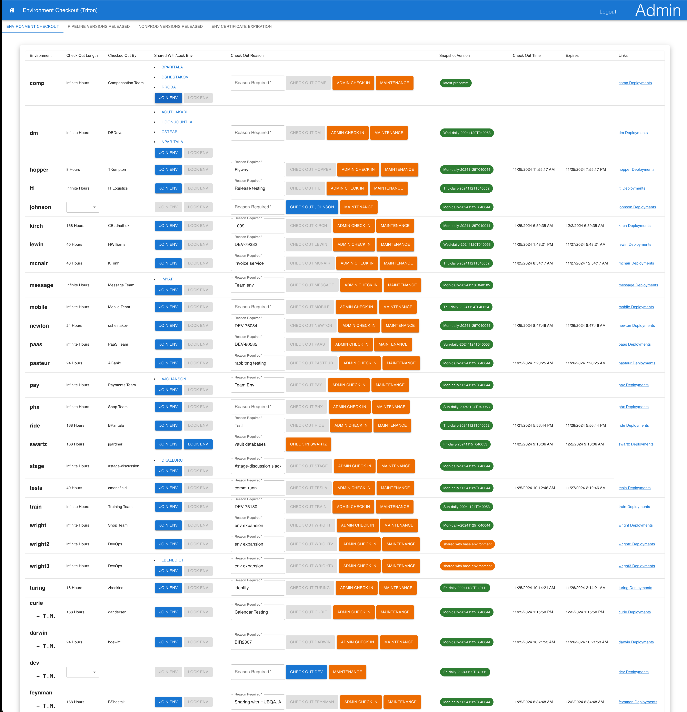

Learning
Reading
Gaming
Weight Lifting
Computers
Music
James D. Gardner
I like Automating things.
Intro
I started my career in I.T. as a helpdesk technician. Although this introductory position opened up new things to learn, I knew I wanted more. So I continued to learn as much as I could about I.T. and software development on the side. I pursued a degree in Information Technology and set my sights on becoming a systems administrator. After two years of helpdesk I was able to move up into a Jr. Systems Administrator position. I continued to learn as much as a could while at work, and on the side. Eventually learning how to script, I started automating my daily tasks. I found in scripting a passion for automation, which naturally led me to becoming a DevOps engineer. I enjoy breaking down tasks into small parts and finding ways to automate each step in a big task. This has led me to automate many things from daily tasks, deployments, and full CI/CD pipelines.
Resume
Education
B.S. Music Industry Technology
Associate of Arts in Music
Experience
Usana Health Sciences - DevOps Engineer Level 3 (Senior)
March 2020 - Present
Cotiviti - DevOps Engineer
January 2015 - March 2020
School Improvement Network - Systems Engineer
August 2014 - January 2015
School Improvement Network - Jr. Systems Engineer/Team Lead
June 2013 - August 2014
School Improvement Network - Helpdesk Technician Level 2
January 2013 - June 2013
Datamark - Helpdesk Technician Level 1
February 2011 - January 2013
Key Bank - Client Service Manager
January 2010 - February 2011
Key Bank - Customer Relations Representative (Teller)
October 2007 - January 2010
Skills
Note: I think these sections are silly, but everyone seems to have one. Here is a *mostly* honest overview of my skills.
Git
Bash
Bamboo/Bitbucket/Jira
Kubernetes
Linux/Centos/Redhat
Rabbitmq
Python
Javascript
Redis
HTML/CSS
Amazon Web Services
Node.JS
React
Typescript
Projects
A selection of projects that I'm not too ashamed of

Developer Deployment App
January, 2021
Built for all development teams to deploy 90+ applications to servers and kubernetes. Interfaces with Bamboo api and Consul api. Written with Angular/Javascript and a node.js backend

Devops Deployment App
January, 2021
Built for DevOps to cut release branches using Bitbucket API and Monitor builds with Bamboo Api. Also used for Deploying 90+ apps to pipeline environments. Written with Angular/Javascript

Environment Checkout App
January, 2021
An application to allow QA and Developers to checkout one of 30+ environments. Written in Angular/Javascript
Fun Facts
Currently
At Usana, I have learned much in the way of Javascript, Angular, and React to help develop in house applications used by our developers. These apps help facilitate the ease of deployments to environments and increase velocity. I have spent alot of time refining the C.I./C.D. pipeline. Specifically integrating automated testing post deployment to eventually reach a true C.I./C.D. Kubernetes has also been a huge focus of my job at Usana. Setting up automated deployments with helm charts to provisioning locally hosted Kubernetes Clusters.
Some History
- I come from a Customer Service background at Key Bank, which transfers very well to my interactions as a DevOps Engineer and working with Development Teams
- While attending school at W.G.U I also worked as a helpdesk engineer. This allowed me to put into practice what I was learning in school.
- I gained my love of automation while being a Systems Engineer and being bored of clicking everything in a gui
- I am a certified Salt Stack Engineer
- Vim > Nano :)
I Like
- Learning
- Reading
- Gaming
- Weight Lifting
- Computers
- Music
Travel / Geography
- I was born and raised in Utah, and still live in Utah. I have lived in other states like Wyoming and Colorado
- I have never left America :( but really hope to one day. Furthest I have travelled is to North Carolina
Favorites
Books
- A Christmas Carol
- Ender's Game
- The Name of the Wind
- To Kill a Mockingbird
- The Dark Forest
- The Book of Mormon
- The Stormlight Archive by Brandon Sanderson
- Mistborn by Brandon Sanderson
Video Games
- Rocket League
- Portal 2
- Final Fantasy IX
- Shovel Knight
- Donkey Kong Country
- Kirby's Dreamland
- Uncharted 2
Mission for the Church of Jesus Christ of Latter Day Saints
Ventura California 2001-2003
I Dream Of
- Living in a seaside town like Ketchikan, Alaska
References
References are available upon request